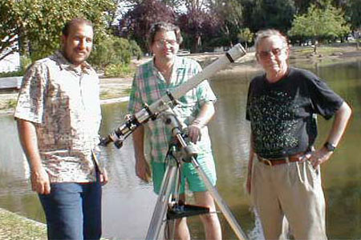
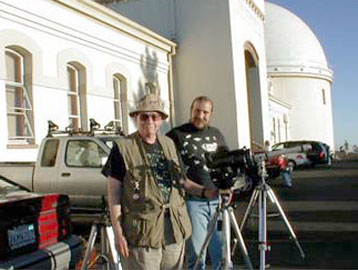

SJAA Ephemeris November 2001 |
SJAA Home |
Contents |
Previous |
Next
SJAA Ephemeris November 2001 |
SJAA Home |
Contents |
Previous |
Next
Summer Under the Sun
Bob Havner
[Another in a continuing series of articles about SJAA loaner telescopes and experiences by borrowers. If you have borrowed an SJAA loaner telescope recently, consider giving back to the club in the form of an article about your experience with the telescope! -Editors]
Bob Havner, Jim Van Nuland, and Ralph Libby pose with loaner number 16, a hydrogen-alpha solar telescope.
|

|
At the start of summer I noticed that the SJAA solar telescope #16 was available for loan. Since clear days were ahead I thought I'd call Mike to arrange to pick it up. The telescope and all the accessories are stored in a well-organized wooden box. Included are the Daystar hydrogen/alpha filter, an energy reduction filter, a star diagonal and 25-mm eyepiece. The manual that comes with the scope is very well thought out. It included clear setup instructions as well as information on using the equatorial mount and several articles on observing the sun. An equatorial mount with clock drive is also supplied.
On the morning after I picked up the scope I was anxious to start observing so I set up in my backyard. Following the instructions, it took very little time to set up and in a short time I was observing the sun! As I tuned the filter the solar prominences came into view. All around the disc of the sun small hairs and loops of plasma shot out into space. Sunspots and light and dark filaments were scattered across the surface of the sun. Throughout the day I would check on the sun. Hour by hour I could see changes in the prominences and surface detail. Over several hours one of the dark filaments coalesced into a sunspot.
Solar observers Ralph Libby and Bob Havner set up with scope #16 at Lick Observatory.
|

|
I volunteer at the Lick Observatory summer programs and this seemed like the perfect setting for sharing some exciting views of the sun. Ralph Libby, a fellow volunteer, sets up his solar scope early to show the sun to guests arriving at the observatory. I joined Ralph in front of the main building for some solar astronomy. As people would arrive, they would stop and take a look through both telescopes. Many had never seen solar flares and left very excited about what they had seen. One afternoon at Lick the sun was very active. There were several large sunspot groups and three large looping flares side by side. As the sun lowered, I could see the flares flatten into one large mass.
Ralph, Jim Van Nuland, and I got together at the San Jose harvest moon festival for some daytime astronomy. The festival was held at Overfelt Park, there were lots of family activities, and many people in attendance. Jim was showing Venus and the moon (and sometimes trees when the clouds got too thick) while Ralph and I showed the sun in visible and H/a light. The clouds were a bit of a problem and, as astronomical events go, they disappeared as the telescopes were being put away. All in all it was a good day with lots of spots and a very large flare on the edge of the sun.
I had a great time with the solar scope this summer and viewed our sun in a new "light." The scope is available and highly recommended especially if you haven't experienced the sun in Hydrogen/alpha.
Mail to:
Bob Havner
Copyright © 2001 San Jose Astronomical Association
Last updated:
February 05, 2002
Previous | Contents | Next